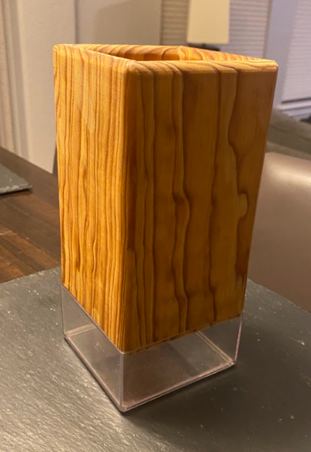
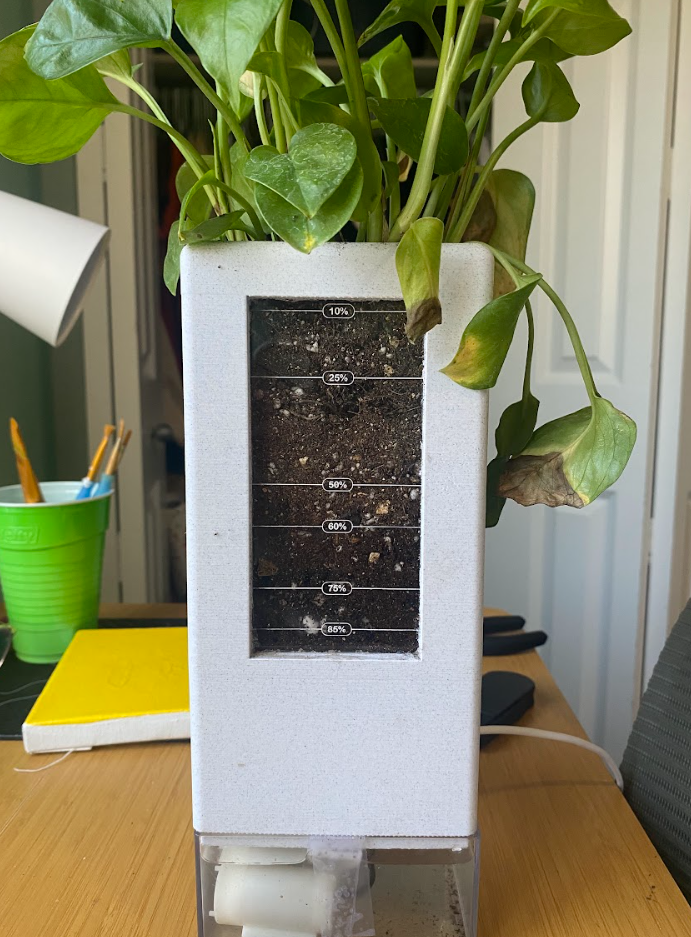
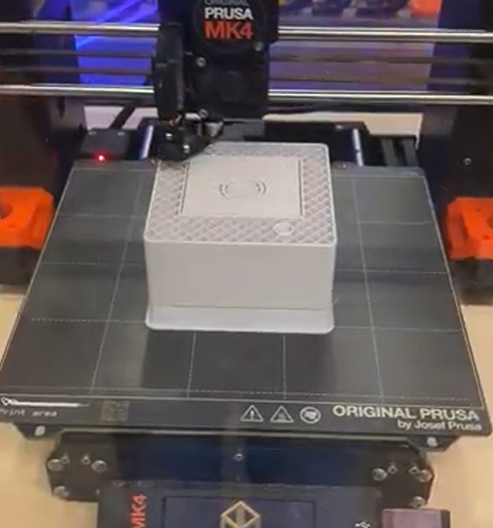
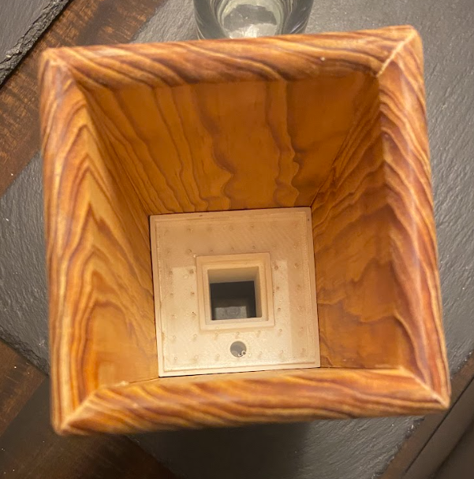

Happy Planter Prototypes
The Happy Planter was initially supposed to be built out of wood. The appeal of this
material was that it could bring out the natural beauty of the plant growing within by
using a similarly natural material. Numerous tests were conducted on sizing, wood type
and stain, as well as window sizing. Despite this hard work, it was later determined that
wood would not be the right material for the job. Wood is notoriously difficult with water
as it can cause it to expand and warp, attributes that would not be ideal for a planter that
would hold damp soil. So after some consideration we pivoted to 3D printing the planter instead.
In an attempt to uphold the original goal of making the planter seamlessly integrate with the
plant itself we chose rock PLA as the 3D print filament. This decision ended up working out great.
The rock PLA was a clean, elegant material that did not distract from the natural beauty of the plant
within. Other smaller adjustments were made to the design such as changes to the electronics enclosure,
a new labeling system for the planter windows, as well as the texture of the outside of the planter,
however this pivot from wood to PLA was arguably the largest one. Below are images of these older Happy
Planter models.




Happy Tracker Prototypes